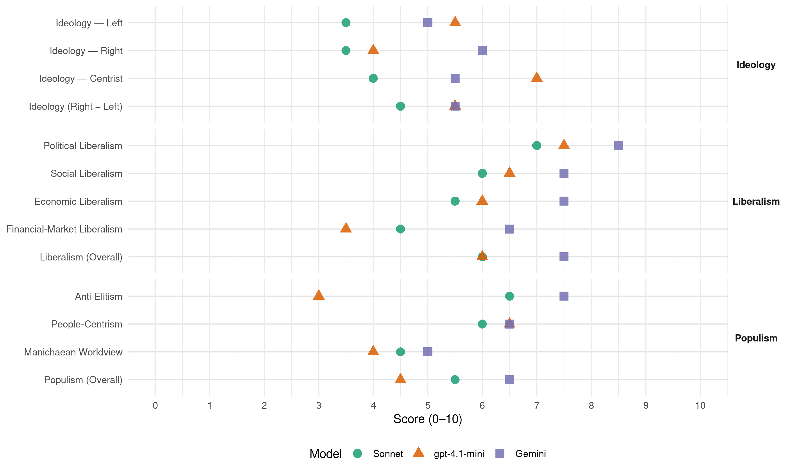

PAN (Mexico, 1985)
manifesto_id 171601_198507
Get full text: This site shows derived annotations and short verbatim quotes only. The full manifesto text is © Manifesto Project / WZB — obtain it via manifesto-project.wzb.eu using the manifesto_id above.
Headline scores
| Dimension | Sonnet | gpt-4.1-mini | Gemini |
|---|---|---|---|
| Populism (Overall) | 5.5 | 4.5 | 6.5 |
| Anti-Elitism | 6.5 | 3.0 | 7.5 |
| People-Centrism | 6.0 | 6.5 | 6.5 |
| Manichaean Worldview | 4.5 | 4.0 | 5.0 |
| Ideology (Right − Left) | 4.5 | 5.5 | 5.5 |
| Liberalism (Overall) | 6.0 | 6.0 | 7.5 |
| Political Liberalism | 7.0 | 7.5 | 8.5 |
| Social Liberalism | 6.0 | 6.5 | 7.5 |
| Economic Liberalism | 5.5 | 6.0 | 7.5 |
| Financial-Market Liberalism | 4.5 | 3.5 | 6.5 |
Evidence per dimension
Economic Liberalism
Gemini · score 8.0 · verified · chunk 1
“Eliminar los monopolios estatales o privados”
3.– Eliminar los monopolios estatales o privados que están limitando el efecto distributivo del ingreso y propiciar la afluencia de pequeñas y medianas empresas
Gemini · score 7.0 · verified · chunk 2
“aliento a toda dase de inversiones”
el establecimiento de instituciones de capacitación, el aliento a toda dase de inversiones con el objetivo mencionado
gpt-4.1-mini · score 7.0 · verified · chunk 1
“Eliminar los monopolios estatales o privados que están limitando el efecto distributivo del ingreso”
…Acción Nacional propondrá por conducto de sus diputados: 3.– Eliminar los monopolios estatales o privados que están limitando el efecto distributivo del ingreso y propiciar la afluencia de pequeñas y medianas empresas al ejercicio de su función en la producción, empleo y redistribución de la renta nacional…
gpt-4.1-mini · score 5.0 · verified · chunk 2
“distribución del gasto público correspondan proporciones mayores”
Lograr que en la distribución del gasto público correspondan proporciones mayores a los estados y a los municipios, con lo cual será posible que las necesidades virtuales de los pueblos puedan ser resueltas por autoridades locales, y no por la lejana, ineficiente y no pocas veces corrompida burocracia del gobierno central.
Sonnet · score 5.0 · verified · chunk 1
“Eliminar los monopolios estatales o privados”
Eliminar los monopolios estatales o privados que están limitando el efecto distributivo del ingreso y propiciar la afluencia de pequeñas y medianas empresas al ejercicio de su función en la producción, empleo y redistribución de la renta nacional
Sonnet · score 6.0 · verified · chunk 2
“facilitación de créditos oportunos y baratos”
mediante la facilitación de créditos oportunos y baratos, el establecimiento de instituciones de capacitación, el aliento a toda clase de inversiones
Financial-Market Liberalism
Gemini · score 7.0 · verified · chunk 1
“estatificación de la banca, disponer de”
Y la última y más novedosa, acentuada con la estatificación de la banca, disponer de los recursos bancarios y emitir ilimitadamente valores gubernamentales con atractivos réditos.
Gemini · score 6.0 · verified · chunk 2
“facilitación de créditos oportunos y baratos”
desarrollo económico de los municipios deben ser alentados por la acción decidida de los gobiernos estatales y federal mediante la facilitación de créditos oportunos y baratos, el establecimiento de
gpt-4.1-mini · score 5.0 · verified · chunk 1
“la renegociación de la deuda hecha por conducto del Secretario de Hacienda”
…La misma renegociación de la deuda hecha por conducto del Secretario de Hacienda, puede ser un paliativo con la doble intención de aliviar temporalmente la crisis, pero también para sortear la permanencia del sistema sin descalabros graves…
gpt-4.1-mini · score 2.0 · verified · chunk 2
“centralismo fiscal que entrega a la federación”
El centralismo fiscal que entrega a la federación por lo menos cinco veces más recursos que los que quedan en los fiscos estatales, es no solamente un efecto del centralismo polítio, sino un instrumento de control sobre las autoridades locales.
Sonnet · score 4.0 · verified · chunk 1
“estatificación de la banca, disponer de los recursos bancarios”
la última y más novedosa, acentuada con la estatificación de la banca, disponer de los recursos bancarios y emitir ilimitadamente valores gubernamentales con atractivos réditos
Sonnet · score 5.0 · verified · chunk 2
“facilitación de créditos oportunos y baratos”
mediante la facilitación de créditos oportunos y baratos, el establecimiento de instituciones de capacitación, el aliento a toda clase de inversiones con el objetivo mencionado
Political Liberalism
Gemini · score 9.0 · verified · chunk 1
“auténtica independencia entre los poderes”
Debe haber una auténtica independencia entre los poderes de la federación. Por ello Acción Nacional pugnará siempre por que cese la indebida y enfermiza preeminencia
Gemini · score 8.0 · verified · chunk 2
“ayuntamientos no resultan de las elecciones populares”
salvo contadas excepciones, los ayuntamientos no resultan de las elecciones populares sino de la voluntad de los gobernadores
gpt-4.1-mini · score 8.0 · verified · chunk 1
“exigimos el cumplimiento de las garantías individuales y el respeto a los derechos políticos de todos los mexicanos”
…Fundamentalmente exigimos el cumplimiento de las garantías individuales y el respeto a los derechos políticos de todos los mexicanos. Frente al manoseo sexenal de nuestra Constitución, pretendemos una revisión seria de lo discutible y un respeto escrupuloso de los preceptos que se mantengan vigentes. Acción Nacional pretende que México sea un estado de derecho, en el que las leyes regulen con sencillez los principales aspectos de la vida de los mexicanos…
gpt-4.1-mini · score 7.0 · verified · chunk 2
“participar en política a nivel estatal o municipal”
Por ello, dentro de nuestros propósitos está el de encaminar a México hacia una vida institucional plena, que permita a todos los ciudadanos participar en política a nivel estatal o municipal, a sabiendas de que las instituciones tendrán plena vigencia y de que será respetada la ley que les da forma.
Sonnet · score 7.0 · verified · chunk 1
“auténtica independencia entre los poderes de la federación”
Debe haber una auténtica independencia entre los poderes de la federación. Por ello Acción Nacional pugnará siempre por que cese la indebida y enfermiza preeminencia que el Ejecutivo tiene en la práctica sobre los otros poderes
Sonnet · score 7.0 · verified · chunk 2
“cambio democrático por el que damos testimonio”
se iniciará para México la nueva época, la verdadera revolución pacífica, el cambio democrático por el que damos testimonio como panistas y como mexicanos.
Liberalism (Overall)
Gemini · score 8.0 · verified · chunk 1
“auténtica independencia entre los poderes”
Debe haber una auténtica independencia entre los poderes de la federación. Por ello Acción Nacional pugnará siempre por que cese la indebida y enfermiza preeminencia
Gemini · score 7.0 · verified · chunk 2
“ayuntamientos no resultan de las elecciones populares”
salvo contadas excepciones, los ayuntamientos no resultan de las elecciones populares sino de la voluntad de los gobernadores
gpt-4.1-mini · score 7.0 · verified · chunk 1
“exigimos el cumplimiento de las garantías individuales y el respeto a los derechos políticos de todos los mexicanos”
…Fundamentalmente exigimos el cumplimiento de las garantías individuales y el respeto a los derechos políticos de todos los mexicanos. Frente al manoseo sexenal de nuestra Constitución, pretendemos una revisión seria de lo discutible y un respeto escrupuloso de los preceptos que se mantengan vigentes. Acción Nacional pretende que México sea un estado de derecho, en el que las leyes regulen con sencillez los principales aspectos de la vida de los mexicanos…
gpt-4.1-mini · score 5.0 · verified · chunk 2
“participar en política a nivel estatal o municipal”
Por ello, dentro de nuestros propósitos está el de encaminar a México hacia una vida institucional plena, que permita a todos los ciudadanos participar en política a nivel estatal o municipal, a sabiendas de que las instituciones tendrán plena vigencia y de que será respetada la ley que les da forma.
Sonnet · score 6.0 · verified · chunk 1
“un orden económico justo”
el objeto de la economía, como lo concibe Acción Nacional, es el establecimiento de un orden económico justo, que resulte de la interacción, a partir de la recta actuación de los particulares, de las organizaciones ocupacionales, del Estado y de la comunidad internacional
Sonnet · score 6.0 · verified · chunk 2
“cambio democrático por el que damos testimonio”
se iniciará para México la nueva época, la verdadera revolución pacífica, el cambio democrático por el que damos testimonio como panistas y como mexicanos.
Anti-Elitism
Gemini · score 8.0 · verified · chunk 1
“maraña de autoritarismo centralista, de burocratismo”
Ha podido avanzar en un ambiente antidemocrático, inhospitalario para la acción política, abriéndose espacios en tupida maraña de autoritarismo centralista, de burocratismo y de desprecio a la voluntad popular.
Gemini · score 7.0 · verified · chunk 2
“lejana, ineficiente y no pocas veces corrompida burocracia”
por autoridades locales, y no por la lejana, ineficiente y no pocas veces corrompida burocracia del gobierno central.
gpt-4.1-mini · score 3.0 · verified · chunk 1
“quienes están cómodamente instalados en las estructuras creadas para beneficio de los menos, no se preocupan por cambiarlas”
…de reformas profundas de las estructuras políticas, económicas y sociales, con la convicción de que los cambios importantes en la historia siempre se han promovido de abajo hacia arriba, ya que, como dice el documento “quienes están cómodamente instalados en las estructuras creadas para beneficio de los menos, no se preocupan por cambiarlas”. En la ponencia se destaca la seria vigencia entre el sistema normativo y la conducta real del régimen; se hace también hincapié en la necesidad de una reforma electoral…
gpt-4.1-mini · score 3.0 · verified · chunk 2
“gobernantes y gobernados”
Una vida mejor y más digna, exige también el destierro de prácticas viciosas que falsifican la vida, pública del país y degradan por igual a gobernantes y gobernados. Por ello, dentro de nuestros propósitos está el de encaminar a México hacia una vida institucional plena, que permita a todos los ciudadanos participar en política a nivel estatal o municipal, a sabiendas de que las instituciones tendrán plena vigencia y de que será respetada la ley que les da forma.
Sonnet · score 7.0 · verified · chunk 1
“quienes están cómodamente instalados en las estructuras creadas para beneficio de los menos”
cambios importantes en la historia siempre se han promovido de abajo hacia arriba, ya que, como dice el documento “quienes están cómodamente instalados en las estructuras creadas para beneficio de los menos, no se preocupan por cambiarlas”
Sonnet · score 6.0 · verified · chunk 2
“lejana, ineficiente y no pocas veces corrompida burocracia”
necesidades virtuales de los pueblos puedan ser resueltas por autoridades locales, y no por la lejana, ineficiente y no pocas veces corrompida burocracia del gobierno central.
Ideology — Centrist
Gemini · score 5.0 · verified · chunk 1
“Una Patria Ordenada y Generosa”
por lo que acudimos a la síntesis genial del fundador y maestro Manuel Gómez Morin: a fin lo que queremos es Una Patria Ordenada y Generosa y Una Vida Mejor y Más Digna Para Todos.
Gemini · score 6.0 · verified · chunk 2
“vida mejor y más digna para todos”
busca la Patria Ordenada, la Patria Generosa, la vida mejor y más digna para todos los mexicanos sin distinción alguna.
gpt-4.1-mini · score 7.0 · verified · chunk 1
“la patria es un pueblo unificado por la tradición, las convicciones y las esperanzas”
…somos, en primer lugar esencialmente mexicanos, creemos en la Nación Mexicana como una realidad, integrada por todos los que nacimos y vivimos en este país y que compartimos valores, tradiciones, virtudes y creencias en las que se ha forjado nuestra historia. La patria es un pueblo unificado por la tradición, las convicciones y las esperanzas, y que a partir de ellas, y en ellas, trabaja para labrarse un futuro mejor. Estamos convencidos de que los mexicanos…
gpt-4.1-mini · score 7.0 · verified · chunk 2
“la patria es de todos”
Acción Nacional proclama que los mexicanos constituímos una gran nación con identidad propia y con un destino que todos debemos buscar y alcanzar, sin exclusivismos y divisiones estériles. El bien común que buscamos es para todos los mexicanos, independientemente de partidarismos o diferencias circunstanciales. La patria es de todos.
Sonnet · score 3.0 · verified · chunk 1
“voluntad popular sea respetada”
se concretan las condiciones necesarias para que en los procesos electorales que se realicen en la región, la voluntad popular sea respetada
Sonnet · score 5.0 · verified · chunk 2
“partido, de inspiración humanista”
nuestro partido, de inspiración humanista, que cree en la persona como eje y motivo de lo social y que aspira a la solidaridad
Ideology — Left
Gemini · score 5.0 · verified · chunk 1
“función social de la propiedad”
además se recalcó la función social de la propiedad a partir del principio del destino universal de los bienes materiales
gpt-4.1-mini · score 6.0 · verified · chunk 1
“la propiedad del capital se justifica en función de la creación de más trabajo útil para más hombres”
…Por consiguiente, reiteramos que es más importante el salario del trabajador que la recompensa al capital, y que la propiedad del capital se justifica en función de la creación de más trabajo útil para más hombres. Distribuir la propiedad, compartir las decisiones, y planear comunitariamente el trabajo en el seno de las unidades de producción, es dar vida concreta al destino común de los bienes y, en el más exacto sentido del término, hacer social la economía…
gpt-4.1-mini · score 5.0 · verified · chunk 2
“atención a comunidades de campesinos, trabajadores e indígenas menos favorecidas”
Por lograr que se aprueben iniciativas que fijen las normas encaminadas a conseguir un desarrollo con equilibrio y justicia, Icon enfasis a la atención a comunidades de campesinos, trabajadores e indígenas menos favorecidas, que han permanecido rezagadas en materia de cultura y educación, y para fijar las políticas de una auténtica descentralización y desconcentración, de acuerdo a las auténticas necesidades de la nación, involucrando a los elementos representativos de cada región.
Sonnet · score 5.0 · verified · chunk 1
“primacía del trabajo sobre los bienes materiales”
ha luchado por un sistema económico político y social que refleje y garantice la primacía del trabajo sobre los bienes materiales e instrumentales que constituyen el capital
Sonnet · score 2.0 · verified · chunk 2
“campesinos, trabajadores e indígenas menos favorecidas”
con enfasis a la atención a comunidades de campesinos, trabajadores e indígenas menos favorecidas, que han permanecido rezagadas en materia de cultura y educación
Ideology (Right − Left)
Gemini · score 6.0 · verified · chunk 1
“no aceptamos ninguna injerencia ni ayuda”
tenemos el deber y el derecho de participar en la vida pública nacional, y no aceptamos ninguna injerencia ni ayuda del extranjero.
Gemini · score 5.0 · verified · chunk 2
“vida mejor y más digna para todos”
busca la Patria Ordenada, la Patria Generosa, la vida mejor y más digna para todos los mexicanos sin distinción alguna.
gpt-4.1-mini · score 6.0 · verified · chunk 1
“la propiedad del capital se justifica en función de la creación de más trabajo útil para más hombres”
…Por consiguiente, reiteramos que es más importante el salario del trabajador que la recompensa al capital, y que la propiedad del capital se justifica en función de la creación de más trabajo útil para más hombres. Distribuir la propiedad, compartir las decisiones, y planear comunitariamente el trabajo en el seno de las unidades de producción, es dar vida concreta al destino común de los bienes y, en el más exacto sentido del término, hacer social la economía…
gpt-4.1-mini · score 5.0 · verified · chunk 2
“la patria es de todos”
Acción Nacional proclama que los mexicanos constituímos una gran nación con identidad propia y con un destino que todos debemos buscar y alcanzar, sin exclusivismos y divisiones estériles. El bien común que buscamos es para todos los mexicanos, independientemente de partidarismos o diferencias circunstanciales. La patria es de todos.
Sonnet · score 5.0 · verified · chunk 1
“cambio de estructuras que permitan superar la antinomia capital-trabajo”
Acción Nacional considera un deber y una meta colaborar en la realización de un cambio de estructuras que permitan superar la antinomia capital-trabajo
Sonnet · score 4.0 · verified · chunk 2
“partido, de inspiración humanista”
nuestro partido, de inspiración humanista, que cree en la persona como eje y motivo de lo social y que aspira a la solidaridad
Ideology — Right
Gemini · score 6.0 · verified · chunk 1
“no aceptamos ninguna injerencia ni ayuda”
tenemos el deber y el derecho de participar en la vida pública nacional, y no aceptamos ninguna injerencia ni ayuda del extranjero.
gpt-4.1-mini · score 5.0 · verified · chunk 1
“Conservar íntegro el territorio nacional incluyendo islas, cayos y arrecifes”
…Acción Nacional propugnará por: 1. - Conservar íntegro el territorio nacional incluyendo islas, cayos y arrecifes, sus recursos naturales y su espacio aéreo, para lo que insistiremos en nuestra iniciativa de que se declare mar territorial mexicano la totalidad del Golfo de California; en la denuncia de tratados internacionales que limiten el aprovechamiento de nuestros recursos…
gpt-4.1-mini · score 3.0 · verified · chunk 2
“la patria es de todos”
Acción Nacional proclama que los mexicanos constituímos una gran nación con identidad propia y con un destino que todos debemos buscar y alcanzar, sin exclusivismos y divisiones estériles. El bien común que buscamos es para todos los mexicanos, independientemente de partidarismos o diferencias circunstanciales. La patria es de todos.
Sonnet · score 4.0 · verified · chunk 1
“los mexicanos, y sólo los mexicanos, tenemos el deber”
Estamos convencidos de que los mexicanos, y sólo los mexicanos, tenemos el deber y el derecho de participar en la vida pública nacional, y no aceptamos ninguna injerencia ni ayuda del extranjero
Sonnet · score 3.0 · verified · chunk 2
“identidad propia y con un destino”
los mexicanos constituímos una gran nación con identidad propia y con un destino que todos debemos buscar y alcanzar
Manichaean Worldview
Gemini · score 6.0 · verified · chunk 1
“gobierno megalómano de simulación y engaño”
Sólo estos cuantos datos revelan la drámatica situación que ha provocado un gobierno megalómano de simulación y engaño, cuya más significativa responsabilidad se acentúa anualmente
Gemini · score 4.0 · verified · chunk 2
“prácticas viciosas que falsifican la vida, pública”
exige también el destierro de prácticas viciosas que falsifican la vida, pública del país y degradan por igual a gobernantes
gpt-4.1-mini · score 4.0 · verified · chunk 1
“El gobierno se convirtió en el capitalista corruptor que despojó al país de sus bienes y de su libertad”
…Tan inexplicable resultado fue producto de una ambición desmedida de poder político del régimen, que no reparó en las consecuencias catastróficas para el pueblo mexicano y para la soberanía de la Nación. El gobierno se convirtió en el capitalista corruptor que despojó al país de sus bienes y de su libertad. Ya señalamos lo peligroso y perjudicial que resulta financiar el gasto público mediante deuda externa…
gpt-4.1-mini · score 4.0 · verified · chunk 2
“quienes pretenden monopolizar la historia”
Nuestra historia nos condiciona y debe unirnos y no separarnos. Quienes pretenden monopolizar la historia, para justificarse, sabiendo de antemano que mienten a los demás, se engañan a sí mismos.
Sonnet · score 5.0 · verified · chunk 1
“gobierno megalómano de simulación y engaño”
la drámatica situación que ha provocado un gobierno megalómano de simulación y engaño, cuya más significativa responsabilidad se acentúa anualmente cuando se advierte que el aumento de los salarios mínimos
Sonnet · score 4.0 · verified · chunk 2
“quienes pretenden monopolizar la historia”
Quienes pretenden monopolizar la historia, para justificarse, sabiendo de antemano que mienten a los demás, se engañan a sí mismos.
People-Centrism
Gemini · score 7.0 · verified · chunk 1
“desprecio a la voluntad popular”
Ha podido avanzar en un ambiente antidemocrático, inhospitalario para la acción política, abriéndose espacios en tupida maraña de autoritarismo centralista, de burocratismo y de desprecio a la voluntad popular.
Gemini · score 6.0 · verified · chunk 2
“TODOS somos México y cada uno de los”
fórmula de Manuel Gómez Morías. TODOS somos México y cada uno de los mexicanos es México, los niños y los adultos
gpt-4.1-mini · score 6.0 · verified · chunk 1
“la patria es un pueblo unificado por la tradición, las convicciones y las esperanzas”
…somos, en primer lugar esencialmente mexicanos, creemos en la Nación Mexicana como una realidad, integrada por todos los que nacimos y vivimos en este país y que compartimos valores, tradiciones, virtudes y creencias en las que se ha forjado nuestra historia. La patria es un pueblo unificado por la tradición, las convicciones y las esperanzas, y que a partir de ellas, y en ellas, trabaja para labrarse un futuro mejor. Estamos convencidos de que los mexicanos…
gpt-4.1-mini · score 7.0 · verified · chunk 2
“TODOS somos México”
Para campesinos y obreros, para clases medias y para marginados, para estudiantes y amas de casa; no queremos que nadie quede fuera de estos TODOS con que se cierra la fórmula de Manuel Gómez Morías. TODOS somos México y cada uno de los mexicanos es México, los niños y los adultos, las mujeres y los hombres.
Sonnet · score 6.0 · verified · chunk 1
“sea el pueblo mismo el que designe a sus autoridades”
no hay presas, ni caminos, ni obras materiales, ni monumentos que puedan tener primacía sobre la urgente reforma política y electoral, para que en esta patria ordenada que proponemos, sea el pueblo mismo el que designe a sus autoridades
Sonnet · score 6.0 · verified · chunk 2
“TODOS somos México y cada uno”
TODOS somos México y cada uno de los mexicanos es México, los niños y los adultos, las mujeres y los hombres. TODOS somos los responsables
Populism (Overall)
Gemini · score 7.0 · verified · chunk 1
“maraña de autoritarismo centralista, de burocratismo”
Ha podido avanzar en un ambiente antidemocrático, inhospitalario para la acción política, abriéndose espacios en tupida maraña de autoritarismo centralista, de burocratismo y de desprecio a la voluntad popular.
Gemini · score 6.0 · verified · chunk 2
“lejana, ineficiente y no pocas veces corrompida burocracia”
por autoridades locales, y no por la lejana, ineficiente y no pocas veces corrompida burocracia del gobierno central.
gpt-4.1-mini · score 4.0 · verified · chunk 1
“quienes están cómodamente instalados en las estructuras creadas para beneficio de los menos, no se preocupan por cambiarlas”
…de reformas profundas de las estructuras políticas, económicas y sociales, con la convicción de que los cambios importantes en la historia siempre se han promovido de abajo hacia arriba, ya que, como dice el documento “quienes están cómodamente instalados en las estructuras creadas para beneficio de los menos, no se preocupan por cambiarlas”. En la ponencia se destaca la seria vigencia entre el sistema normativo y la conducta real del régimen; se hace también hincapié en la necesidad de una reforma electoral…
gpt-4.1-mini · score 5.0 · verified · chunk 2
“TODOS somos México”
Para campesinos y obreros, para clases medias y para marginados, para estudiantes y amas de casa; no queremos que nadie quede fuera de estos TODOS con que se cierra la fórmula de Manuel Gómez Morías. TODOS somos México y cada uno de los mexicanos es México, los niños y los adultos, las mujeres y los hombres.
Sonnet · score 6.0 · verified · chunk 1
“sólo los gobernantes estarán al servicio del pueblo”
Sólo en esta forma los gobernantes estarán al servicio del pueblo, y no el pueblo al servicio de quienes ocupan el poder
Sonnet · score 5.0 · verified · chunk 2
“lejana, ineficiente y no pocas veces corrompida burocracia”
necesidades virtuales de los pueblos puedan ser resueltas por autoridades locales, y no por la lejana, ineficiente y no pocas veces corrompida burocracia del gobierno central.
Social Liberalism